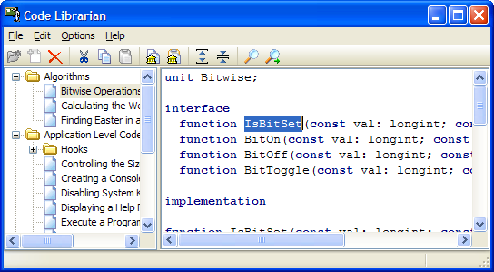

Code Librarian |
|
The Code Librarian enables you to organize and access often-used code snippets. It is an easy way to store the various code items that you use often, but do not fit into a general-purpose library unit. The snippets are stored in a custom structured storage file called CodeLibrarian.fs.
The Code Librarian is composed of two panes. The pane on the left is the folder view that allows you to create nested categories to organize for your code snippets. You can rename, add, and delete folders, or move them using drag and drop. Folder titles can be edited by clicking a selected folder.
The Code Librarian supports copying code from the IDE into the code pane and vice versa.
You can search for keywords by clicking the Find button. Both the topic title and the code pane are searched.
The Options selection allows you to change the display fonts, layout mode, and the location of the Code Librarian snippet file. The syntax highlighting mode for the code snippet can also be toggled between none, Delphi, C++, HTML, and SQL from the context menu of the source editor.  Tip: A starter database of code snippets (shown in the screen shot above) that you can integrate directly into the Code Librarian is available on the GExperts home page.
|